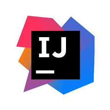
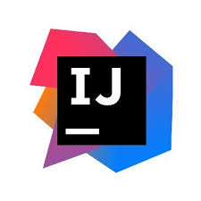
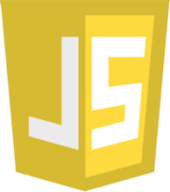
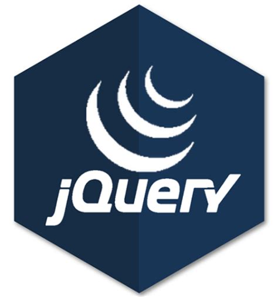
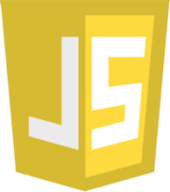
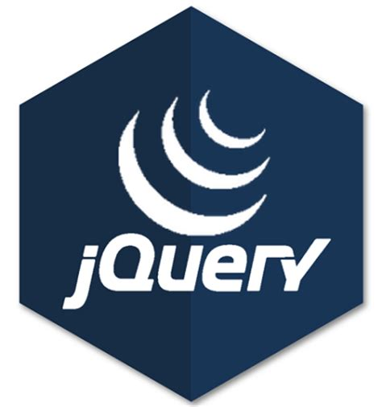

 





Click any button above to see it's description and external links on left side.
Bourne-Again Shell is a shell with powerful scripting capabilities. I use it for automating scripts for MySQL/Couchbase queries, deploying Docker containers, Github push/pull updates, moving files remotely using SSH and rsync, and many more System Administrator duties.
Couchbase is a NoSQL database which uses json Documents to store data. It uses it's own language called N1QL (pronounced Nickel). I use it as an alternative to MySQL/MariaDB for projects that may benefit from it's powerful features and simplicity.
Docker is a "Containerization" software which allows you to develop and deploy apps inside totally controlled environments. All my apps run inside Docker containers so that no matter what server my apps are running on, it will work the same no matter what base OS or hardware that server uses.
Git is a minimalistic and lightweight but powerful version control software which makes it easy to develop projects/apps and explore ideas in separate "branches", and if some new feature breaks my app, I can always rewind back to a previous state when it worked. It's exceptionally good for use in a team environment.
HTML and CSS are the two main languages I learned to build the front-end of my web applications, I am not an expert with them like I am with the other Backend technologies, but I know enough so that I could make my projects look good enough to post on the web.
IntelliJ IDEA is my preferred Java IDE. I previously used Eclipse, but found that IntelliJ was more intuitive and required less configuration than Eclipse did. Thanks to IntelliJ Ultimate my productivity has definitely increased substantially.
I use Java as the main backend language of all my web applications. This is because Java as an Application language has much more power and features than something like JavaScript/Node.js. This is the reason I devoted more time to learning and mastering Java than I did to JavaScript. Combined with Vert.x for asynchronicity, Java is an ideal programming language for handling the backend code for all my web applications.
JavaScript is the first programming language I learned, and it's what I use to manipulate the HTML DOM for apps that require it. Also it's what I use to communicate front-end websites to Java Backend programs.
JQuery and AJAX are my preferred means of making responsive webpages. It makes submitting forms and obtaining results from database queries instantaneous.
After I built my own PC, I decided to install both Windows and Linux on it in a dual boot configuration. Within a short time, I found out I liked developing within Linux much more than I did within Windows, so now I use Linux for 100% of my programming. Right now my workstation OS is Pop!_OS, which is based on Ubuntu. Beyond that, I also run my servers in RancherOS and use Alpine within that.
MySQL/MariaDB are RDBMS(Relational Database Management Systems) I learned as my primary method of storing data for my websites. This is one of my most studied languages and I consider it my specialty.
Node.Js is the program I learned to use before I knew Java/Vertx. It was an effective and easy way to connect MySQL to my websites. Because of this NPM and Node.Js are technologies I am very familiar with, and can use effectively.
RXJava2 was the reactive Extensions package I learned for use with Java/Vertx. Since Couchbase uses only Reactor Core I also learned that. I learned them so that I could make my Java code reactive. So I am familiar with Reactive code concepts and syntax.
Vert.x is the technology that makes all my Java Code Asynchronous and it makes communication between backend and frontend code, as well as communication between Java classes very simple/intuitive with it's eventBus messaging system. Beyond that, when it is combined with Couchbase or Mysql Database it is a great recipe for handling communication between servers and clients even if there are millions of people logging in at the same time. In my opinion Routing webpages also seems easier in Vert.x. All of these reasons leads me to using Vert.x for many of my Java webapps.
VIM(Vi-Improved) is one of my all time favorite technologies I learned in the past few years. It is simply a text editor, but it is so powerful and has so many capabilities, that any code or even simple text documents you write will be done in much less time than it takes in normal text editors. Check out the webpage and you'll see more details explaining vim. All my code is typed with VIM.
This was my very first project I ever did. Built with Node.js and MySQL/Mariadb connector. The goal was to create a professional looking lawn business site so I could practice developing webpages with Database Integration. It runs completely within Docker containers. It is also built with REST API for handling http requests/responses, and CRUD API for handling user data.
This was my second project, client had an old webpage they wanted me to replace with a more modern one. but still keep the appealing parts of it. Here I got to practice my skill with JS-DOM manipulation for the pictures.
This is currently my most ambitious project. It is a work in progress and it's a group effort with me and two other developers. It's basically a video game you play in your browser based on the online game "Dungeon Crawl Stone Soup".
I liked working on this project because it deepened my understanding of Java programming with Vertx. It also helped me develop skill with Model-View-Controller concepts as well as with Web Routing. I also learned standard practices that businesses such as American Express use for querying Couchbase with N1QL. This was also helpful in continuing my understanding of REST and CRUD API.